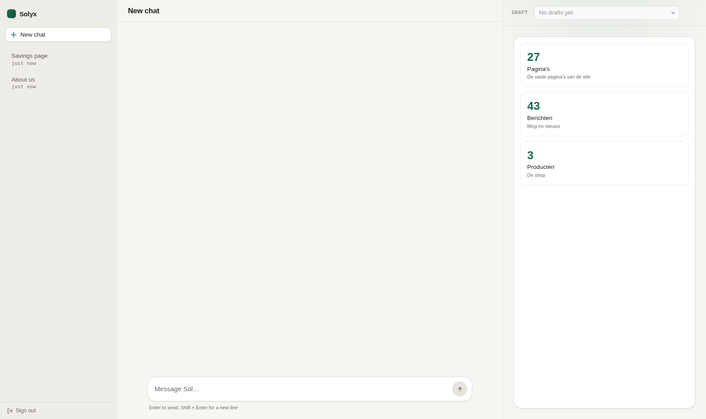
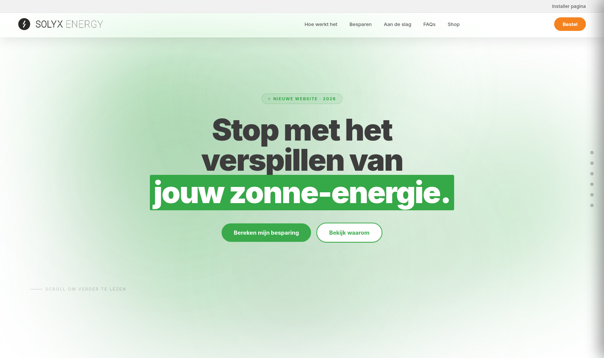
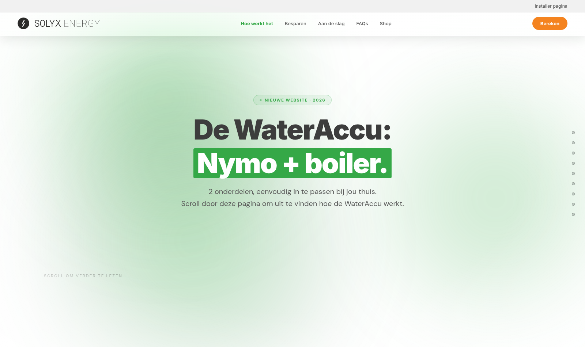
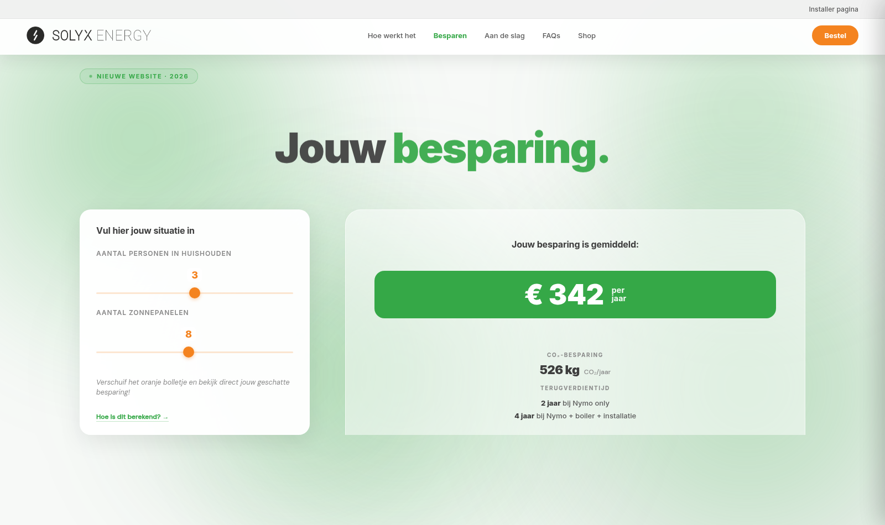
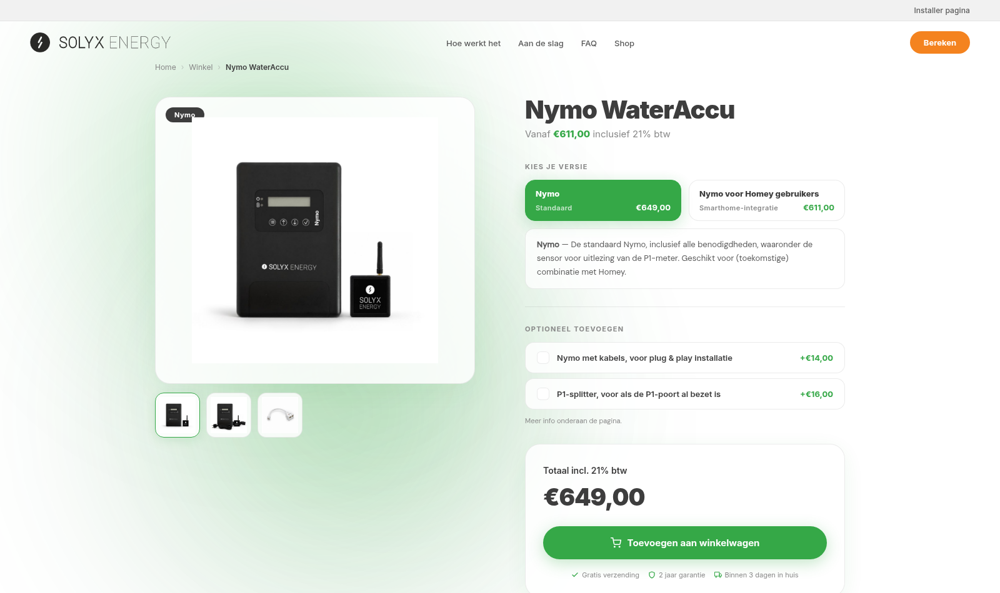
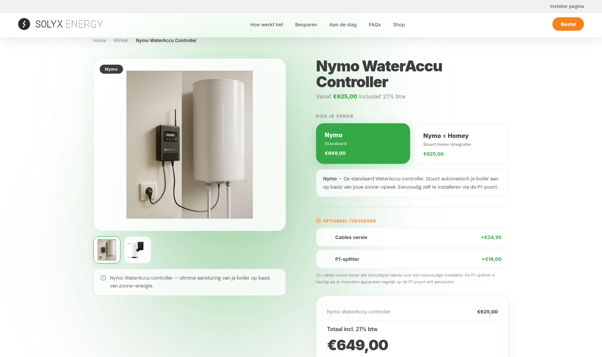
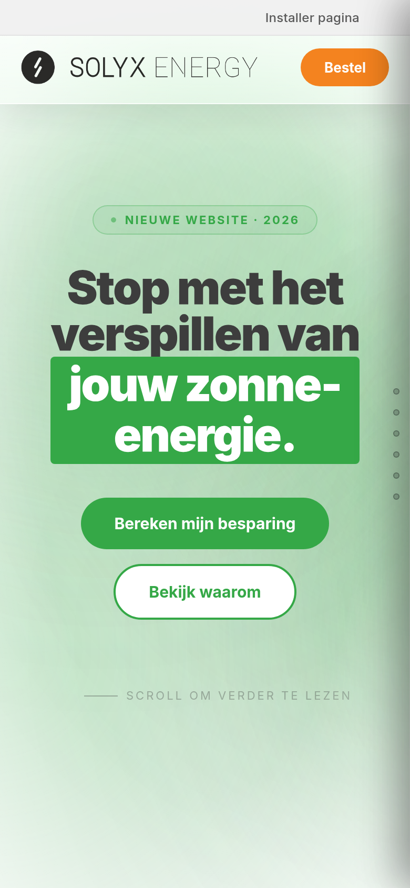
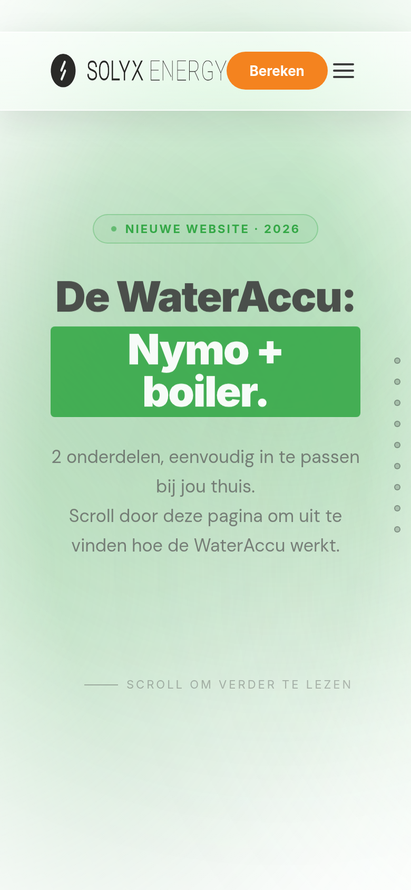
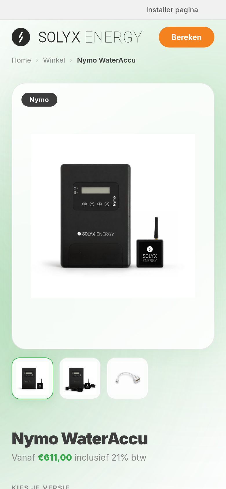

Everything on this page is live or captured from a running system — nothing here is a mock-up or a plan.
solyx.oopuo.nl. A change to the website is asked for in plain language instead of being done by hand in WordPress.

These are audited properties of the account it runs under, not promises in code.
The full Dutch redesign is built as fast, standalone pages. A selection, captured at desktop size:





Also captured: FAQ and customer stories — see the image files next to this document.



The assistant graduates from editing words to building pages: composing a page from the site's existing design blocks instead of only changing text inside blocks someone else placed. The safety guarantee moves with it: everything it builds is a draft, and WordPress itself denies it the permission to publish. Approval stays human.